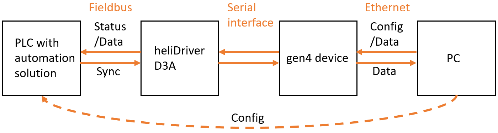
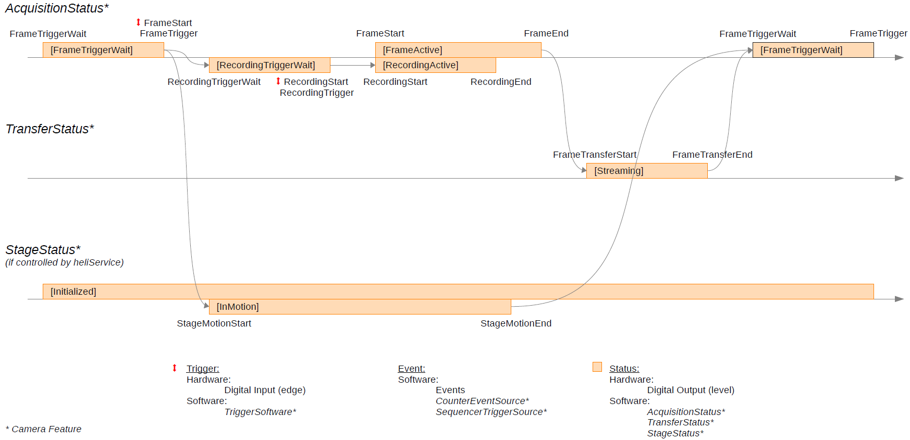

TN_51.1.0.0: Heliotis Gen4 Device Fieldbus Reference for D3
Introduction
The Heliotis gen4 device family (heliCamTM C4, heliInspectTM H8/H9) offers optional fieldbus capability in combination with a fieldbus module build into the heliDriverTM D3A. Heliotis currently offers modules supporting either PROFINET RT or EtherCAT®. This capability enables the gen4 device to be integrated into industrial networks for data exchange and control. The heliDriver poses as a fieldbus device or slave and can be controlled by a programmable logic controller (PLC). To integrate the device into the fieldbus, both the device and the PLC that controls it need to be configured correctly. This document serves as a reference for the configuration of both sides with the use of features on the camera and the description file (ESI/GSD) inclusion and demo projects for the PLC. The document also points to further information on Heliotis gen4 devices and fieldbuses.
{kind=link}

Fig. 11 System interconnection
Note
This document only covers gen4 device control via fieldbus but control and status features can also be used with physical I/Os or a combination of both
The following process data objects (PDOs) are available on the network:
Fieldbus names |
Camera feature names |
Direction |
|---|---|---|
Bool0..7 |
FieldbusBool0..7 |
device in / PLC out |
Bool8..15 |
FieldbusBool8..15 |
device out / PLC in |
ApplDataInt0..15 |
FieldbusIntData0..15 |
device in / PLC out |
ApplDataInt16..31 |
FieldbusIntData16..31 |
device out / PLC in |
ApplDataFloat0..15 |
FieldbusFloatData0..15 |
device in / PLC out |
ApplDataFloat16..31 |
FieldbusFloatData16..31 |
device out / PLC in |
Example Use Cases
The following chapters describe some common use cases and how to implement them on both the device and the PLC controlling it.
Note
The link to the device description files that need to be imported to the PLC development environment can be found in the Further Reading section of this document
“Hello World”
It is recommended to begin with a very basic application to verify that the data exchange between the device and the PLC works in both directions. The following pseudo-code snippets configure a camera output via GenICam features and verify the value of the input PDO on the PLC.
FieldbusBoolSelector = 8 #Or any value 8..15
FieldbusBoolSource[FieldbusBoolSelector] = "UserOutput0" #Or any of UserOutput0..UserOutput7
UserOutputSelector = "UserOutput0" #Must match with the configuration above
UserOutputValue[UserOutputSelector] = True
#True enables (high) the output, False disables (low) the output
input_value = Bool8 #According to FieldbusBool from above Listing (Bool8..Bool15)
To check the other direction, an output PDO value is set by the PLC and read via the FieldbusBoolStatus feature on the device.
Bool0 = 1 #Or any bool PDO Bool0..Bool7
FieldbusBoolSelector = 0 #Or any value according to the listing above (0..7)
input_value = FieldbusBoolStatus[FieldbusBoolSelector]
Camera Status
Heliotis gen4 devices offer a range of status flags (e.g. RecordingActive) that can be mapped to output PDOs to relay status information to the PLC.
FieldbusBoolSelector = 8 #Or any value 8..15
FieldbusBoolSource[FieldbusBoolSelector] = "RecordingActive" #Maps the "RecordingActive" information to the selected PDO (e.g. 8)
recording_active = Bool8 #According to the selected FieldbusBool from above listing (Bool8..Bool15)
The diagram below shows the different status flags and how they fit into the acquisition cycle.
{kind=link}

Fig. 12 Event and status diagram
Note
The current version of the Event and Status Diagram can be found in the Feature Description appendix (see Further Reading) and may differ depending on the camera firmware version.
Acquisition Control
To start a measurement on a Heliotis gen4 device, the TriggerSource feature can be used to map a PDO to a triggersource.
TriggerSelector = "FrameStart"
TriggerSource[TriggerSelector] = "FieldbusBool0" #Maps the "FrameStart" trigger to the FieldbusBool0 PDO (or any of FieldbusBool0..FieldbusBool7)
Bool0 = 1 #Select the PDO according to the camera configuration (Bool0..Bool7)
Bool0 = 0 #By default, the camera is triggered on the "RisingEdge" of the signal
#(See TriggerActivation in feature description for more information)
Camera Control, Light ON/OFF
The light can be controlled from the PLC via the LightControllerSource feature.
LightControllerSelector = "LightController0"
LightControllerSource[LightControllerSelector] = "FieldbusBool0" #Maps the light control to a PDO (any of FieldbusBool0..FieldbusBool7)
Bool0 = 1 #Enables the light
Bool0 = 0 #Disables the light
Camera Control, Sequencer Sets
Sequencer sets can be used on Heliotis gen4 devices to switch between multiple camera configuration states triggered by events (see Event and Status Diagram). The event source can be mapped onto an edge of a PDO signal.
SequencerSetSelector = 0
SequencerPathSelector = 0
SequencerTriggerSource[SequencerSetSelector][SequencerPathSelector] = "FieldbusBool0" #Maps the sequencer trigger to FieldbusBool0 (or any of FieldbusBool0..FieldbusBool7)
Bool0 = 1
Bool0 = 0 #By default the sequencer set transition is triggered by the "RisingEdge" of the signal. (see SequencerTriggerActivation)
Camera Control, Counters
The counter feature set provides the option to count the occurences of specific events on the device. This can be helpful for testing and debugging of an application. It can for example be used to count transitions on a PDO.
CounterSelector = "Counter0" #Or Counter1
CounterEventSource[CounterSelector] = "FieldbusBool0" #Or any of FieldbusBool0..FieldbusBool7
CounterEventActivation[CounterSelector] = "RisingEdge" #Can also be "FallingEdge" or "AnyEdge"
cnt_value = CounterValue[CounterSelector]
Bool0 = 1
Bool0 = 0
Vision Application, Parameterisation
The use of integer or float PDOs also enables the option to transfer data either to or from the vision application on the gen4 device. For example, the PLC could transfer a target value for a stepheight measurement as a float value. The vision application on the camera uses this value to compare it to the measurement result and set or reset a bool PDO depending on whether the measured value is higher or lower than the target value. The PLC can then use this return value to execute further actions.
FieldbusBoolSelector = 8 #Or any value 8..15
FieldbusBoolSource[FieldbusBoolSelector] = "UserOutput0" #Or any value UserOutput0..UserOutput7
UserOutputSelector = "UserOutput0" #Must match with the configuration above
UserOutputValue[UserOutputSelector] = False #True enables (high) the output, False disables (low) the output
FieldbusFloatDataSelector = 0 #Select the PDO which is used by the PLC to write the step height information (any float PDO between 0..15)
acquisition loop:
target_step_height = FieldbusFloatDataValue[FieldbusFloatDataSelector]
measured_step_height = acquire_and_process()
if (measured_step_height > target_step_height):
UserOutputValue[UserOutputSelector] = True
else:
UserOutputValue[UserOutputSelector] = False
acquisition loop:
ApplDataFloat0 = TargetStepHeight #Can be ApplDataFloat0..ApplDataFloat15
result = Bool8 #Can be Bool8..Bool15
if (result == 0):
execute action A
else:
execute action B
Note
This simplified example has no synchronisation for when the PLC should read the result. This can be achieved by using status features as shown in the “Camera Status” example
Vision Application, Result Transmission
Instead of parameterisation and evaluation on the gen4 device, measurement results can also be transmitted directly using integer or float output PDOs.
FieldbusFloatDataSelector = 16 #Select the PDO the results will be written to (any float PDO between 16..31)
acquisition loop:
measured_step_height = acquire_and_process()
FieldbusFloatDataValue[FieldbusFloatDataSelector] = measured_step_height
acquisition loop:
result = ApplDataFloat16 #Can be ApplDataFloat16..ApplDataFloat31
Further Reading
The following chapter contains links to other documents and hardware ordering information.
With the Heliotis SDK (C4Utility) available on https://www.heliotis.com/support/updates/ (needs a login) further examples and documentation are installed. The installation directory is stored in the environment variable $C4UTILITY_ROOT and is by default C:\Program Files\C4Utility
Heliotis
ftrDesc: The documentation for the camera features can be found in $C4UTILITY_ROOT\doc\ftrDesc.pdf
ProgrammersGuide: Go to https://www.heliotis.com/support/updates/ (needs a login) and download the zip archive labeled “heliInspect H8 Programmer’s Guide”
Examples: $C4UTILITY_ROOT\examples offers examples for a variety of programming languages
Hardware ordering information: Independent of the chosen fieldbus, a heliDriver D3A is always required. Additionally only one of the available fieldbus modules needs to be added to the D3A. The choice of heliInspect (H8/H9) or heliCam (C4) devices has no influence on the fieldbus connectivity and is made independently.
device |
type number TN |
article number AN |
|---|---|---|
heliDriver D3A |
D3A.0 |
40 81 10 |
EtherCAT Module |
D3MRTETH.0.0-ETHERCAT |
40 81 90 |
PROFINET Module |
D3MRTETH.0.0-PROFINET |
40 81 95 |
Beckhoff
Documentation: The user manual for TwinCAT can be found on https://infosys.beckhoff.com/english.php?content=../content
Examples: An EtherCAT example project can be found in $C4UTILITY_ROOT\fieldbus\examples\Beckhoff
Device description file: The EtherCAT Slave Information file (ESI) is located in $C4UTILITY_ROOT\fieldbus\deviceDescription\Beckhoff\heliotisGen4Device_230926.xml
Siemens
Documentation: The TIA Portal user manual can be found on https://cache.industry.siemens.com/dl/files/542/40263542/att_829827/v1/GS_STEP7Bas105enUS.pdf
Examples: An example project for PROFINET is located in $C4UTILITY_ROOT\fieldbus\examples\Siemens
Device description file: The General Station Description file (GSD) is located in $C4UTILITY_ROOT\fieldbus\deviceDescription\Siemens\GSDML-V2.41-Heliotis AG-heliotis gen4 device-20231023.xml
Document History
Version |
Date |
Changes |
Responsible |
|---|---|---|---|
51.1.0.0 |
27-02-2024 |
Initial version |
sb |
EtherCAT® is a registered trademark and patented technology, licensed by Beckhoff Automation GmbH, Germany.